特徴抽出する前準備として、適切な背景除去（Substract Backgraound）を行うことは重要です。
ここでは、ノイズを消すとか、背景の画像自体を消す（背景のビルや山を消す）というより、以下のようなものを消すことを目的とします。（※1）
元画像
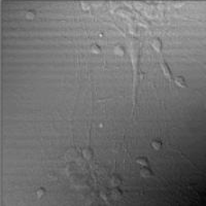
元画像 － Meanフィルタ後の画像 ＋ 平均輝度※2元画像にMeanフィルタ処理をした画像（フィルタのレンジは40）
処理後の画像
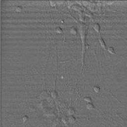
「Flat Field Correction（フラットフィールド補正）」による方法です。こちらは撮像後の画像処理というより、撮像時での補正を対象にしている手法のようです。1と違って割ります。
元画像 ／ Meanフィルタ後の画像 × 平均輝度元画像にMeanフィルタ処理をした画像（フィルタのレンジは40）
処理後の画像
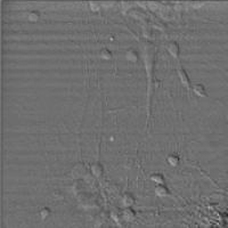
「Meanフィルタを利用した背景除去」の1を使うか、2を使うかは、背景ノイズの種類によって変わるのだと思います。背景ノイズが加算的なら1だし、乗算的（CCDのムラ）なら2を使えば良いのでしょう。
ただし、2は割り算がメインの処理なので、1より処理時間は多くかかります。
FFT -> FFTデータに対してバンドパスフィルタ -> 逆FFTFFTデータ
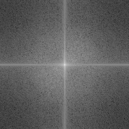
バンドパスフィルタ（ImageJにて作成）
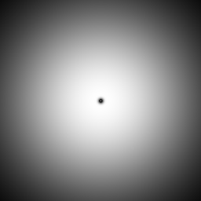
逆FFT後
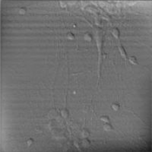
上の逆FFT後の画像には、平均値フィルタを利用したものと比べてムラが残っています。これはラップアラウンド効果によるものです。
これを防止する方法としては、FFT処理前に、ゼロパディング(参考)や画像をタイル状に並べたり（参考）する前処理を行う方法があります。
以下は画像をタイル状に並べる前処理を行ったものです。
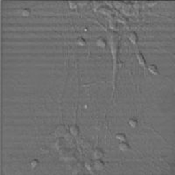
端の方もムラが無くなっています。
さらにFFTにおいては、フィルタにうまい細工を加えると縞状のムラを消すことも可能です。
縦線を付与したバンドパスフィルタ（ImageJにて作成）
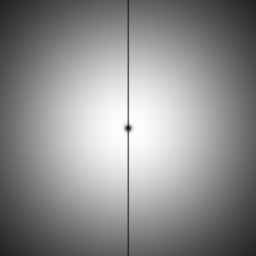
逆FFT後
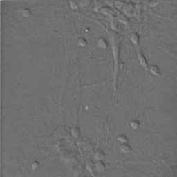
縞状のノイズを消すことができました。
FFTは奥が深いです。ただし、注意点としては、
アルゴリズムは、、、未勉強です。論文を読むか、http://rsbweb.nih.gov/ij/plugins/rolling-ball.html のコードを参考にすれば分かるはず。。。
アルゴリズムについて、すこしだけ分かった部分を以下に説明します。
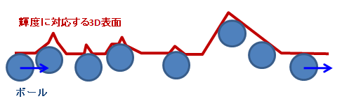
輝度を高さとする3D表面を考えます。所望の径のボールを3D表面の下側を転がして、ボール外面の描く面を導き、除算します。Medianフィルタと同様に鋭いスパイク状のノイズを無視する効果が期待できます。
処理後（最後に平均輝度を乗算しています）
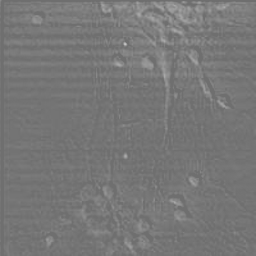
※1
移動体を抽出するような場合は、背景の画像を完全に除去することを目的にする場合だってあります。
この場合、背景除去のアルゴリズムはまったく異なるものになります。
※2
画像の輝度平均を128など固定の数値になるように、照明を制御すれば処理速度はより速くなります。